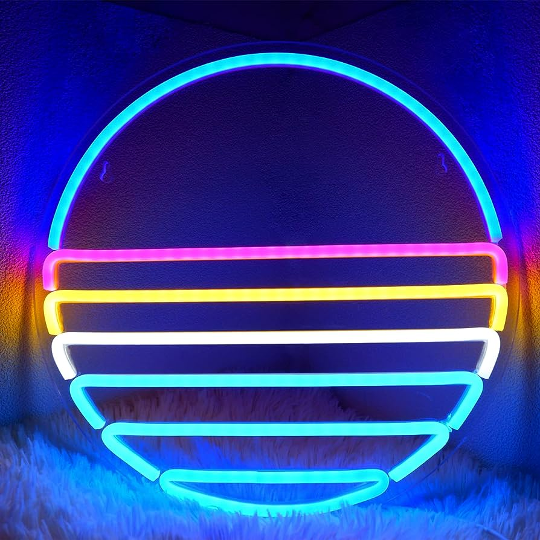
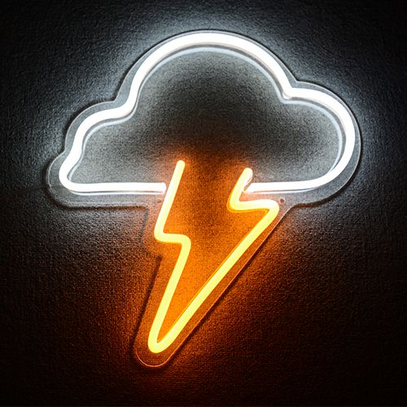

NEON DECOR's neon signs are made with advanced LED tubing that allows them to be lightweight and flexible enough to be molded into any design or shape. The transparent acrylic backing is made with premium material.
Gallery

NEON DECOR's neon signs are made with advanced LED tubing that allows them to be lightweight and flexible enough to be molded into any design or shape. The transparent acrylic backing is made with premium material.